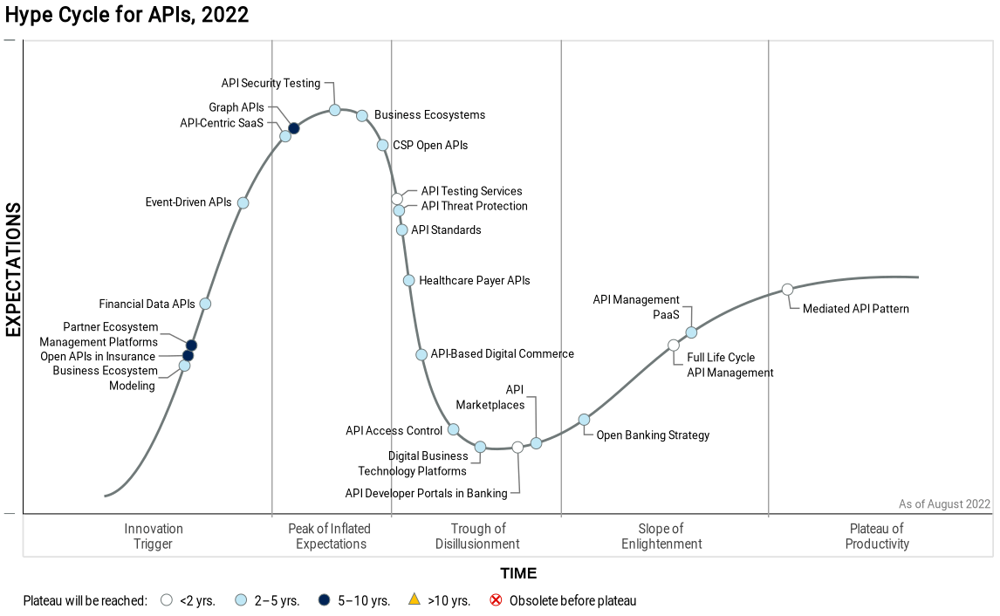

Why consider using CloudEvents?
(4) EDA is on the Rise

(5) API Landscape Management Matters

- Evolution of API styles
- Decentralization of API management
- API governance
- Managing API and developer platforms
(6) Messaging System Landscapes

(7) There Cannot Be Only One

- Growing and evolving API landscapes are the new normal
- Deciding on
the one
API style/technology/platform is a losing battle
- Plan and architect for diversity
- There is a broad spectrum between
The One
and Anything Goes
(8) CloudEvents: Managing Events in Event Landscapes

- Create a model for context attributes that describe events
- Define an extension model for extension attributes
- Map context and extension attributes into event format encodings
- Create protocol bindings for protocols supporting message metadata
- Provide support for consistent versioning of events
(9) CloudEvents Example
{
"specversion" : "1.0",
"type" : "com.example.someevent",
"source" : "/mycontext",
"subject": null,
"id" : "C234-1234-1234",
"time" : "2018-04-05T17:31:00Z",
"comexampleextension1" : "value",
"comexampleothervalue" : 5,
"datacontenttype" : "application/json",
"data" : {
"appinfoA" : "abc",
"appinfoB" : 123,
"appinfoC" : true
}
}
(10) CloudEvents Value Proposition
- Unified model of events across formats and messaging fabrics
- Easier integration of events across various technologies
- Better Function-as-a-Service (FaaS) portability across FaaS platforms
- Better opportunities for Tooling to benefit from the unified model
- Foundation for specific event-oriented models such as Webhooks
- Easier policy enforcement across the landscape and between systems
What do CloudEvents look like?
(12) [https://github.com/cloudevents/spec/blob/v1.0.2/cloudevents/spec.md#required-attributes]
id (String): Uniquely identifies the event (for a given source)
source (URI-reference): Identifies the context in which an event happened
specversion (String): The CloudEvents specification version (currently 1.0
)
type (String): Identifies the type of event that happened
(13) [https://github.com/cloudevents/spec/blob/v1.0.2/cloudevents/spec.md#optional-attributes]
datacontenttype (String): Identifies the content type of the data value
dataschema (URI): Identifies the schema of the data value
subject (String): Identifies the event subject below source level
time (Timestamp): Timestamp of when the occurrence happened
(14) Formats, Bindings, and Content Modes
- CloudEvents have to be mapped into a specific [https://github.com/cloudevents/spec/tree/v1.0.2/cloudevents/formats]
- All implementations must support the [https://github.com/cloudevents/spec/blob/v1.0.2/cloudevents/formats/json-format.md]
- [https://github.com/cloudevents/spec/blob/v1.0.2/cloudevents/formats/avro-format.md] and [https://github.com/cloudevents/spec/blob/v1.0.2/cloudevents/formats/protobuf-format.md] formats are available as well
- [https://github.com/cloudevents/spec/tree/v1.0.2/cloudevents/bindings] describe how events are sent and received over a given protocol
- Currently existing bindings are for [https://github.com/cloudevents/spec/blob/v1.0.2/cloudevents/bindings/amqp-protocol-binding.md], [https://github.com/cloudevents/spec/blob/v1.0.2/cloudevents/bindings/http-protocol-binding.md], [https://github.com/cloudevents/spec/blob/v1.0.2/cloudevents/bindings/kafka-protocol-binding.md], [https://github.com/cloudevents/spec/blob/v1.0.2/cloudevents/bindings/mqtt-protocol-binding.md], [https://github.com/cloudevents/spec/blob/v1.0.2/cloudevents/bindings/nats-protocol-binding.md], and [https://github.com/cloudevents/spec/blob/v1.0.2/cloudevents/bindings/websockets-protocol-binding.md]
- Content modes can describe different ways of how to deliver events
- Structured content mode represents events in the way defined by a format
- Binary content mode places attributes in protocol metadata (e.g., HTTP header fields)
- Batched content mode has to be supported by batch-friendly formats
(15) CloudEvents Example: Structured
{
"specversion" : "1.0",
"type" : "com.example.someevent",
"source" : "/mycontext",
"subject": null,
"id" : "C234-1234-1234",
"time" : "2018-04-05T17:31:00Z",
"comexampleextension1" : "value",
"comexampleothervalue" : 5,
"datacontenttype" : "application/json",
"data" : {
"appinfoA" : "abc",
"appinfoB" : 123,
"appinfoC" : true
}
}